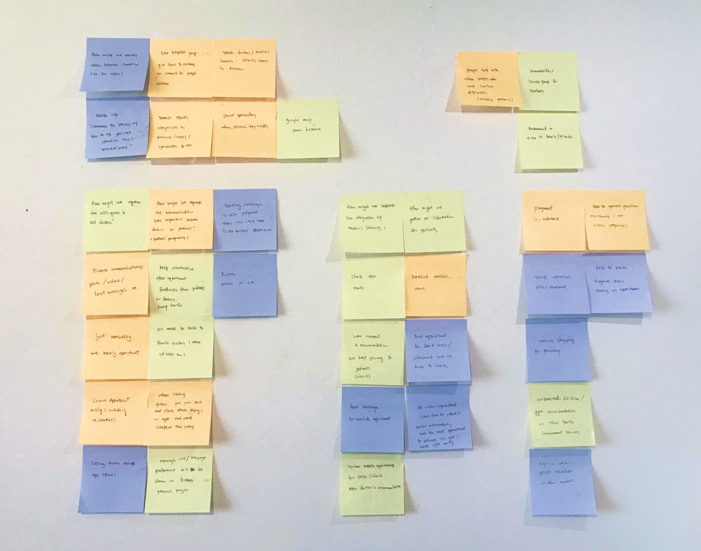
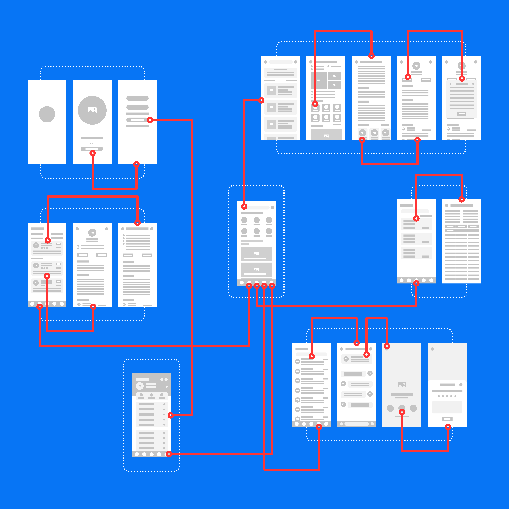
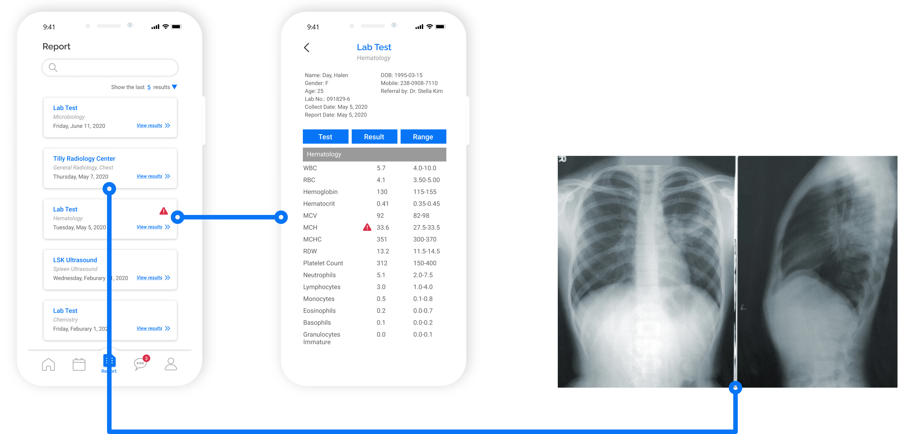

Overview
Dr. Hippo is an mobile app that allows users to search viable clinics, book doctor appointments, video/text consulting with doctors, track medical test results or report and other health services.
Pain Point
It is not convenient for people to go to hospital in-person during the pandemic and some clinics only offer virtual services. The key words for a virtual medical service app is convenience, easy-access and simple-navigation.
User Research
To solve the main pain point, there are 3 main insights: how might we improve the communication between doctors and users, how might we provide more accurate and useful demand for users to find medical services and how might we integrate the medical information.
Persona
Serena is currently a florist and owns her own store in Vancouver. She keeps a healthy life life style and does a regular yearly body checkup with her family doctor. She doesn’t have any chronicle past medication history and when she usually won’t visit a doctor if a pharmacist can help her. During the pandemic, the in-person doctor appointment gets more difficulties for her and she would like to talk to doctors online if it is not big, which also makes herself feel safe.
“If I can just consult with my dermatologist by just sending a photo of my back.”
Age: 35 years old
Occupation: Florist
Medication History: None
Frequency of Doctor Appointment:
Around 3 times per year (including one routine annual checkup)
Logo
The app use the short form of “Hippocrates”, who is considered one of the most outstanding figures in the history of medicine. And the short form “hippo” represents the animal hippo so the logo for Dr. Hippo is in the shape of a cartoon-type hippo.

Onboarding

Wireframe
Home & Search

Appointment
After booking the appointments, users can add dates and time to google canlendar or outlook calendar (also can opt out) and if users don’t want to add anything, the apoointment detailed information is also found here.

Users can check their checkup or test results at anywhere they want. The reports include x-rays, blood test, and all kinds of hysical checkups. Both doctors and patients can go through it.
Profile
Users record their appointment history and edit preference in profile. Only signed-in users are able to access most functions.
Future Improvement
- - Web Version
- - Online Payment
- - Customized health plan
- - Purchase Insurance
- - Communities